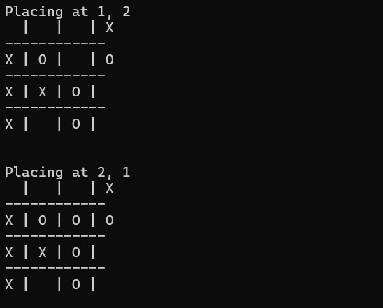

.png)
To view the project, please view the the Github repository.
Tic Tac Toe
Timeline : November 2024 - December 2024
In this project I created a console version of tic-tac-toe with a player and computer mode. The project utilized important principles
of object oriented programming. The twist on the game is that the game must also be able to played up to a 30x30 grid.
How I did it:
To create the program, I split the functions into multiple classes. One class was in charge of display, another for changing the board, another for checking for win conditions and the last serving as the main. To achieve polymorphism, each player in the main are declared as the superclass for players and the specialized classes would either be human or computer.
Mistakes Made:
The problems I faced was the logic process of detecting when a player has won. Originally, I had an algorithm check the entire
board. This complicated the process, as the check can be done in a faster andmore efficient way. Instead of checking the board,
the algorithm only checks the row, column and diagonals of where the specific marker was placed. This ensured that the check was faster
and went through less indexes. Going foward, I learned that before starting the solution, I need to properly think of how the
solution will work.
Skills Mastered:
-

Java
-
Maven